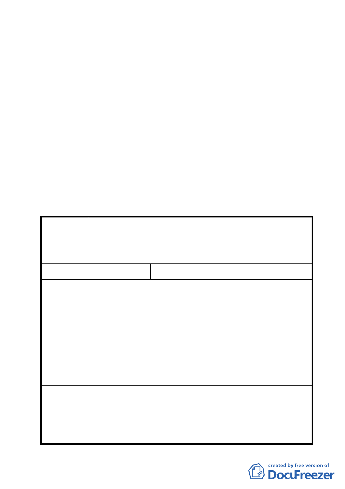

行音樂中心使用）」；變更原「學校用地」為「商業區」之
土地作為『等土地等容積』調派與後續納入南港高鐵案整
體規劃使用。
三、 本件係市府以 96 年 10 月 11 日府都規字第 09634489203 號，
並自 96 年 10 月 12 日起公開展覽 30 天。
四、 法令依據：都市計畫法第 27 條第 1 項第 4 款。
五、 申請單位：臺北市政府。
六、 公民或團體所提意見：計 1 件。
決議：
一、照案通過。
二、有關公民或團體陳情意見決議情形詳如綜理表。
臺北市都市計畫委員會公民或團體所提意見綜理表
變更臺北市原南港臺鐵貨運站交通用地、商業區、中華電信南
案 名 港機房電信用地及毗鄰工業區為公園用地（供流行音樂中心使
用）暨變更南港車站東側學校用地為商業區主要計畫案
編 號 １ 陳情人 中華電信股份有限公司
本公司南港機房基地配合「流行音樂中心」建設，需將地上機
房及料庫等建物遷建。因機房之遷建工程浩大，除土地改良物
外，尚有附著於建物之洞道、管線等機線設備，其價值及施工
費用初估約新台幣 12 億元以上，相關拆遷補償之計算攸關本公
司權益甚鉅。
陳 情 理 由 然本公司迄今未接獲市府有關本案「拆遷補償」之核算方式及
核給費用等通知。又本案跨區市地重劃本公司配地位置，能否
賡續服務既有客戶，亦尚須評估。
建請於相關「土地改良物之拆遷補償」協商後再繼續本主要計
畫案之程序。
1. 本公司機房遷建之拆遷補償計算，攸關本公司權益甚鉅，請
市府儘速召開與本公司協商會議。
建 議 辦 法 2. 建議參酌比照內政部訂頒之「土地徵收遷移查估基準」估算
補償費。
委員會決議 有關中華電信股份有限公司所提其釋出土地後之地上物拆遷
10